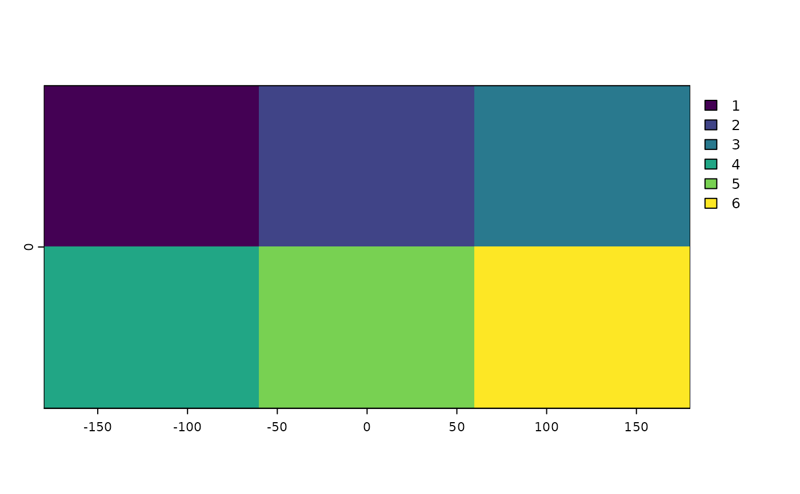
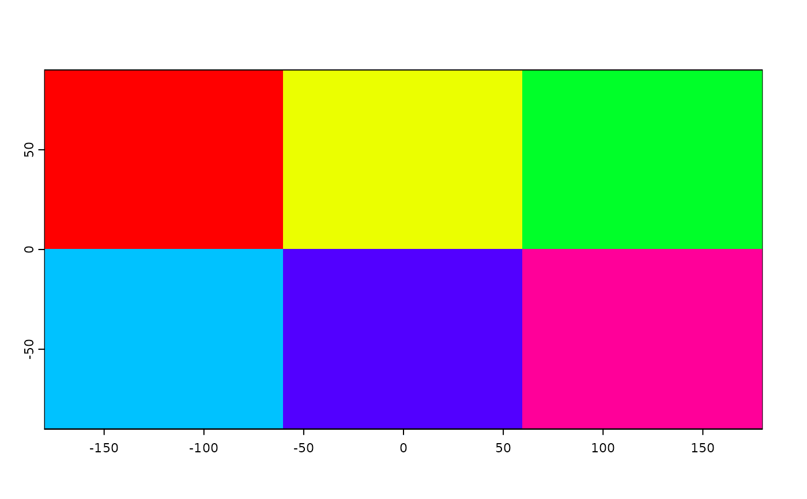

Color table
colors.RdGet or set color table(s) associated with a SpatRaster. Color tables are used for associating colors with values, for use in mapping (plot).
Usage
# S4 method for class 'SpatRaster'
coltab(x)
# S4 method for class 'SpatRaster'
coltab(x, ..., layer = 1) <- value
# S4 method for class 'SpatRaster'
has.colors(x)Arguments
- x
SpatRaster
- layer
positive integer, the layer number or name
- value
a two-column data.frame (first column the cell value, the second column the color); a vector of colors (the first one is the color for value 0 and so on); or a four (value,red,green,blue) or five (including alpha) column data.frame also from 0 to n; or NULL to remove the color table. You can also supply a list of such data.frames to set a color table to all layers
- ...
additional arguments (none implemented)
Examples
r <- rast(ncols=3, nrows=2, vals=1:6)
coltb <- data.frame(value=1:6, col=rainbow(6, end=.9))
coltb
#> value col
#> 1 1 #FF0000
#> 2 2 #EBFF00
#> 3 3 #00FF29
#> 4 4 #00C2FF
#> 5 5 #5200FF
#> 6 6 #FF0099
plot(r)

has.colors(r)
#> [1] FALSE
coltab(r) <- coltb
plot(r)

has.colors(r)
#> [1] TRUE
tb <- coltab(r)
class(tb)
#> [1] "list"
dim(tb[[1]])
#> [1] 6 5